청소년상담사-2급(1교시)(구) (2016-03-26 기출문제)
1과목: 청소년 상담의 이론과 실제
1. 청소년 문제에 관한 설명으로 옳지 않은 것은?
- 청소년이 학업 문제로 고민하는 것은 주로 학업 성적과 관련된 것이 많다.
- 청소년의 가족 문제는 주로 부모 및 형제와의 갈등이다.
- 최근 다양한 계층에서 청소년들의 일탈이 증가하고 있다.
- 가장 흔한 청소년 문제는 약물남용이다.
- 청소년 시기의 갈등은 자연스러운 현상으로 볼 수 있다.
(정답률: 알수없음)

2. 청소년내담자의 특징에 관한 설명으로 옳은 것은?
- 상담 동기가 부족하나 상담자를 긍정적으로 지각한다.
- 여러 회기 상담에서 요구되는 지구력이 대체로 부족한 편이다.
- 구체적 조작 단계에 있으므로 인지능력이 충분하다.
- 한 가지 관심사에 대해 지속적으로 유지하는 능력이 충분하다.
- 발달적 특성보다 개인적 특성에 의한 문제가 많이 나타난다.
(정답률: 알수없음)
3. 청소년의 발달에서 충분한 탐색없이 지나치게 빨리 정체성 결정을 내린 상태는?
- 정체성 유예(identity moratorium)
- 정체성 혼미(identity diffusion)
- 정체성 유실(identity foreclosure)
- 발달적 위기(developmental crisis)
- 정체감 성취(identity achievement)
(정답률: 알수없음)
4. 중학교 2학년 A군은 우수반에서 열등반으로 옮겨가며 자신감이 없어졌다. 상담자는 A군의 생활양식을 분석하고 격려하며, 사회적 관심을 갖도록 재교육하였다. 이 때 적용된 이론은?
- 정신분석
- 개인심리학
- 현실치료
- 실존치료
- 인간중심
(정답률: 알수없음)
5. 다음에서 설명하는 상담이론은?
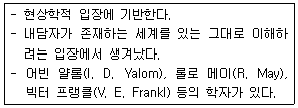
- 정신분석
- 실존주의
- 인간중심
- 행동주의
- 현실치료
(정답률: 알수없음)
6. A군은 엄마가 돌아가셨지만, 아직도 매일 저녁마다 골목에 나가 엄마가 오실 것을 기다린다. A군은 어떤 방어기제를 사용하고 있는가?
- 투사(projection)
- 합리화(rationalization)
- 반동형성(reaction formation)
- 억압(repression)
- 부정(denial)
(정답률: 알수없음)
7. 강화와 처벌에 관한 설명으로 옳지 않은 것은?
- 부적 강화는 행동 증가를 위해 혐오자극을 없애는 것이다.
- 처벌은 행동 감소를 위해 혐오자극을 제시하는 것이다.
- 지각에 대한 벌점은 처벌을 위한 수단이다.
- 안전벨트 착용 시 경고음이 멈추는 것은 부적 강화이다.
- 화장실 청소로 숙제를 면하는 것은 정적 강화이다.
(정답률: 알수없음)
8. 부모의 가치조건을 강요하여 긍정적 존중의 욕구가 좌절되고, 부정적 자아개념이 형성되면서 심리적 어려움이 발생된다고 보는 이론은?
- 인간중심 상담
- 행동주의 상담
- 정신분석 상담
- 교류분석 상담
- 현실치료 상담
(정답률: 알수없음)
9. 청소년상담자의 전문적 자질 중 상담자가 알아야 할 상담 실무에 관한 내용이 아닌 것은?
- 자신이 일하는 기관의 상담관련 업무지식
- 상담 관련법과 윤리
- 상담연계 기관에 관한 이해와 활용지침
- 사례관리 방법
- 레크레이션에 관한 지식
(정답률: 알수없음)
10. 청소년상담자의 태도에 관한 설명으로 옳지 않은 것은?
- 상담자로서의 전문성 뿐만 아니라 호감을 주는 태도를 가져야 한다.
- 청소년의 발달 특성과 행동에 대한 이해를 지니고 있어야 한다.
- 상담자의 유능성을 입증하기 위해 내담자에게 도움이 되지 않더라도 계속 상담하는 태도를 취한다.
- 내담자의 어려움과 비슷한 해결되지 않은 자신의 문제를 갖고 있는 상담자는 내담자를 다른 상담자에게 의뢰한다.
- 상담자는 자신이 어떤 사람이며 그것이 내담자에게 어떤 영향을 주는지 알고 있을 필요가 있다.
(정답률: 알수없음)
11. A양은 부모님에 대한 분노를 자해로 나타내고 있다. 이렇게 외부에 대한 감정을 자신에게 되돌리는 게슈탈트 이론의 접촉경계혼란 상태는?
- 반전(retroflection)
- 투사(projection)
- 내사(introjection)
- 편향(deflection)
- 융합(confluence)
(정답률: 알수없음)
12. 청소년상담의 목표 진술로 적합하지 않은 것은?
- 거절을 못 하는 경우 친구에게 '아니'라고 말한다.
- 비만인 경우 6개월 동안 몸무게를 5kg 감량한다.
- 국어시험 점수가 60점인 경우 다음 달 국어시험 점수를 5점 올린다.
- 아침마다 학교에 지각하는 경우 책임감 있고 매사에 완벽한 학생이 된다.
- 운동이 부족한 경우 하루에 30분씩 운동한다.
(정답률: 알수없음)
13. 청소년상담의 특징으로 옳지 않은 것은?
- 상담 대상에는 청소년, 청소년과 관련된 부모나 교사 등이 포함될 수 있다.
- 상담 목표에 청소년의 성장을 돕는 예방이 포함될 수 있다.
- 상담은 면접중심 상담 뿐만 아니라 다양한 활동을 통해서도 이루어진다.
- 청소년상담과 성인상담은 목표나 방법 등에 있어서 차이가 없다.
- 청소년의 발달단계 특성을 고려한 상담개입 방안을 구성하여 활용한다.
(정답률: 알수없음)
14. 키치너(K. Kitchener)의 윤리적 의사결정을 위한 도덕원칙에 해당되지 않는 것을 모두 고른 것은?
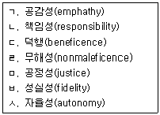
- ㄱ, ㄴ
- ㄱ, ㄷ
- ㄴ, ㄹ, ㅂ
- ㄷ, ㅁ, ㅅ
- ㄹ, ㅁ, ㅅ
(정답률: 알수없음)
15. 상담 종결 시 다루어야 할 내용을 모두 고른 것은?
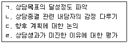
- ㄱ, ㄴ
- ㄱ, ㄷ
- ㄴ, ㄷ
- ㄴ, ㄷ, ㄹ
- ㄱ, ㄴ, ㄷ, ㄹ
(정답률: 알수없음)
16. 상담초기에 권장되지 않는 기법은?
- 경청
- 직면
- 명료화
- 구체화
- 재진술
(정답률: 알수없음)
17. 내담자의 문제, 원인 또는 관련 요인, 상담개입 방법을 체계적으로 설명하는 과정을 말하는 것은?
- 호소문제 명료화
- 사례 개념화
- 내담자 정보 분석
- 분류 및 명명
- 문제 증상의 이해
(정답률: 알수없음)
18. 다음 대화 내용에 사용된 상담자의 상담 기법은?
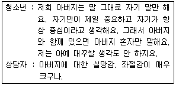
- 요약
- 재진술
- 반영
- 거리낌 다루기
- 즉시성
(정답률: 알수없음)
19. 상담구조화에 관한 설명으로 옳지 않은 것은?
- 상담의 모든 단계에서 이루어질 수 있지만 주로 초기에 잘 이루어질 필요가 있다.
- 내담자가 상담에 대한 비현실적 기대를 갖고 있을 경우 중요성이 더욱 높아진다.
- 상담이 진행되면서 라포가 형성된 이후 천천히 진행된다.
- 내담자와 상담자 간에 기본적인 기대를 맞추어가는 과정이다.
- 상담절차나 조건, 상담관계, 비밀보장 등에 대해 구조화한다.
(정답률: 알수없음)
20. 해석 기법에 관한 설명으로 옳지 않은 것은?
- 내담자의 말에 대해 상담자가 자신의 이해와 판단을 사용하여 반응하는 기법이다.
- 내담자의 문제 상황, 행동 등을 바라보는 상담자의 이해의 틀을 제시하는 것이다.
- 해석의 내용은 내담자의 준거체계와 차이가 날수록 좋다.
- 해석의 내용은 가능한 내담자가 통제, 조절할 수 있는 것이 좋다.
- 단정적, 절대적 어투보다 잠정적, 탄력적 어투를 사용하는 것이 좋다.
(정답률: 알수없음)
21. 청소년내담자에게 충고나 조언을 할 때 상담자의 개입방법으로 옳은 것을 모두 고른 것은?
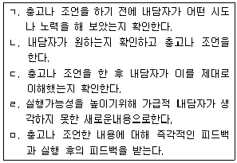
- ㄱ, ㄴ
- ㄱ, ㄷ, ㄹ
- ㄱ, ㄴ, ㄷ, ㄹ
- ㄱ, ㄴ, ㄷ, ㅁ
- ㄴ, ㄷ, ㄹ, ㅁ
(정답률: 알수없음)
22. 상담자가 다음과 같이 상담 목표를 설정했다면 어떤 목표 설정의 원리가 적용된 것인가?
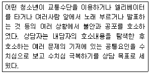
- 구체성
- 문제 축약 및 단순화
- 측정 가능성
- 달성 가능성
- 상담자와 내담자 간 동의
(정답률: 알수없음)
23. 사이버 상담의 기법과 이에 관한 설명이 옳은 것을 모두 고른 것은?
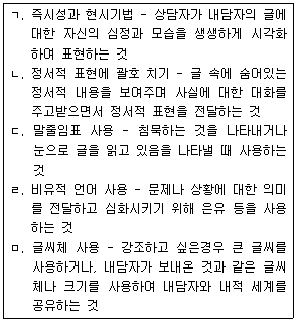
- ㄱ, ㄴ
- ㄱ, ㄴ, ㄷ
- ㄱ, ㄷ, ㄹ
- ㄴ, ㄷ, ㄹ, ㅁ
- ㄱ, ㄴ, ㄷ, ㄹ, ㅁ
(정답률: 알수없음)
24. 내담자에게 다음의 경험을 갖게 하는 상담은?
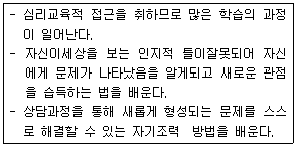
- 분석심리 상담
- 정신역동 상담
- 행동수정
- 게슈탈트 상담
- 인지정서행동 상담
(정답률: 알수없음)
25. 청소년내담자의 상황이나 행동에 대한 인식을 변화시키는 전략으로, 문제의 다른 측면에 초점을 두거나 다른 시각에서 문제를 바라볼 수 있게 하는 기법은?
- 정신적 여과(mental filtering)
- 바이오피드백(biofeedback)
- 대안 검토(examining alternatives)
- 재구성(reframing)
- 사고와 감정의 감시법(monitoring thought and feeling)
(정답률: 알수없음)
26. 다음의 상담 개입은 어떤 상담이론에서 주로 사용하는가?
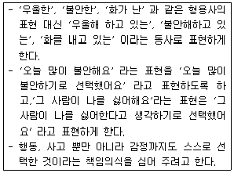
- 현실치료 상담
- 해결중심 상담
- 인지행동 상담
- 내담자중심 상담
- 행동주의 상담
(정답률: 알수없음)
27. 교류분석 상담에서 사용되는 개념이나 기법이 아닌 것은?
- 생활자세(life position)
- 자아상태(ego state)
- 각본분석(script analysis)
- 막다른 골목(impasse)
- 게임분석(game analysis)
(정답률: 알수없음)
28. 문제를 개인과 분리하여 문제 이해와 대처를 위한 관점을 새롭게 구성할 수 있도록 돕는 이야기 상담 기법은?
- 외재화하기
- 내재화하기
- 문제 이야기의 행간 읽기
- 전체 이야기 다시 쓰기
- 새로운 이야기 강화하기
(정답률: 알수없음)
29. 해결중심 상담의 기본 원리나 규칙이 아닌 것은?
- 병리적인 것 대신에 건강한 것에 초점을 둔다.
- 문제가 없으면 손대지 않는다.
- 내담자 문제 배경 분석이 잘 이루어져야 한다.
- 작은 변화에 초점을 둔다.
- 내담자의 자원을 발견하여 활용한다.
(정답률: 알수없음)
30. 콜버그(L. Kohlberg)의 도덕발달 이론에 관한 설명으로 옳지 않은 것은?
- 도덕발달 단계를 크게 전인습, 인습, 후인습 수준으로 구분하였다.
- 도덕발달 단계 중 청소년기는 대체로 인습적 수준의 시기에 속한다.
- 여성이 보다 성숙한 윤리관을 지니고 있다고 보고, 여성에 의한 배려의 윤리를 주장하였다.
- 도덕발달을 모든 문화권의 보편적이며 합리적인 사고능력 과정으로 보았다.
- 도덕적 행위를 도덕적 판단능력으로 보았으며, 그 원리를 정의에서 찾았다.
(정답률: 알수없음)
2과목: 상담연구방법론의 기초
31. 관찰연구에 관한 설명으로 옳은 것을 모두 고른 것은?
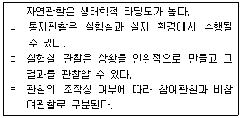
- ㄱ, ㄴ
- ㄷ, ㄹ
- ㄱ, ㄴ, ㄷ
- ㄴ, ㄷ, ㄹ
- ㄱ, ㄴ, ㄷ, ㄹ
(정답률: 알수없음)
32. 동년배 연구(cohort study)에 관한 설명으로 옳은 것은?
- 특정시점에서의 집단 간 차이를 조사한다.
- 고정된 모집단에서 조사시점마다 표본을 다르게 추출하여 변화경향성을 분석한다.
- 표본으로 추출된 동일한 대상의 변화에 대해 반복적으로 조사한다.
- 연구목적이 같은 연구로서 조사시점의 모집단이 다르다.
- 반복측정될 때마다 추출된 표본의 손실이 많아 연구가 중단될 가능성이 높다.
(정답률: 알수없음)
33. 표집방법과 그 종류의 연결이 옳지 않은 것은?
- 확률적 표집방법 - 행렬표집(matrix sampling)
- 확률적 표집방법 - 할당표집(quota sampling)
- 비확률적 표집방법 - 편의표집(convenience sampling)
- 비확률적 표집방법 - 눈덩이표집(snowball sampling)
- 확률적 표집방법 - 비율층화표집(proportional stratified sampling)
(정답률: 알수없음)
34. 메타분석에 관한 설명으로 옳지 않은 것은?
- 동일하거나 유사한 여러 연구들로부터 나온 연구결과를 통합하여 분석하는 방법이다.
- 개별연구에서 효과크기를 계산하여 평균을 산출한다.
- 개별연구의 효과크기와 다른 관련 변인간의 상관관계를 분석할 수 있다.
- 메타분석이 개발되고 난 후 상담성과를 종합하는 연구가 처음 시작되었다.
- 메타분석의 결과가 신빙성을 가지려면 분석에 사용된 각 연구들의 질이 높아야 한다.
(정답률: 알수없음)
35. 다음 설명에 해당하는 과학적 연구의 특징으로 옳은 것은?
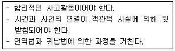
- 구체성
- 논리성
- 간결성
- 효용성
- 수정가능성
(정답률: 알수없음)
36. 가설의 진술형태로 옳은 것을 모두 고른 것은?
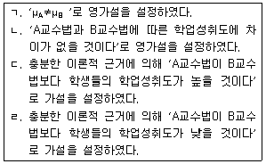
- ㄱ, ㄷ
- ㄴ, ㄷ
- ㄴ, ㄹ
- ㄱ, ㄴ, ㄹ
- ㄴ, ㄷ, ㄹ
(정답률: 알수없음)
37. A상담연구자는 15명 학생을 대상으로 성폭력예방교육프로그램을 실시한 후, 프로그램 효과를 검증하기 위해 학생들의 사전-사후 성지식을 각각 측정하였다. A상담연구자가 연구진행 시 유의할 점으로 옳은 것을 모두 고른 것은?
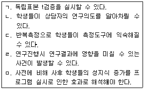
- ㄱ, ㄴ, ㅁ
- ㄱ, ㄷ, ㅁ
- ㄴ, ㄷ, ㄹ
- ㄱ, ㄴ, ㄷ, ㄹ
- ㄴ, ㄷ, ㄹ, ㅁ
(정답률: 알수없음)
38. 일원변량분석(one way ANOVA) 결과에 대한 해석과 통계치를 논문에 제시할 때 옳은 것은?
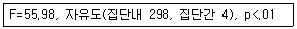
- 4 집단간 유의한 차이가 있는 것으로 나타났다(F(4, 298) = 55.98, p＜ .0.1).
- 4 집단간 유의한 차이가 있는 것으로 나타났다(F(298, 4) = 55.98, p＜ .0.1).
- 4 집단간 유의한 차이가 없는 것으로 나타났다(F(4, 298) = 55.98, p＜ .0.1).
- 5 집단간 유의한 차이가 있는 것으로 나타났다(F(298, 4) = 55.98, p＜ .0.1).
- 5 집단간 유의한 차이가 있는 것으로 나타났다(F(4, 298) = 55.98, p＜ .0.1).
(정답률: 알수없음)
39. 척도에 관한 설명으로 옳지 않은 것은? (문제 오류로 실제 시험에서는 3, 4번이 정답처리 되었습니다. 여기서는 3번을 누르면 정답 처리 됩니다.)
- 비율척도는 절대 영점이 존재한다.
- 등간척도는 측정단위 간 등간성이 유지되는 척도이다.
- 서열척도, 등간척도는 점수들의 차이와 등수, 서열관계를 측정할 수 있다.
- 등간척도는 척도 상에서 얻은 점수를 바탕으로 몇 배 더 크다는 표현이 가능하다.
- 명명척도는 사물을 구분하기 위해 부여되며 독립변수 측정을 위해 주로 사용된다.
(정답률: 알수없음)
40. 연구윤리의 일반원칙에 해당하는 것을 모두 고른 것은?
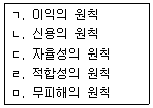
- ㄱ, ㄷ, ㄹ
- ㄷ, ㄹ, ㅁ
- ㄱ, ㄴ, ㄷ, ㅁ
- ㄱ, ㄴ, ㄹ, ㅁ
- ㄱ, ㄴ, ㄷ, ㄹ, ㅁ
(정답률: 알수없음)
41. 연구특성상 기만의 사용이 정당화된 경우, 연구자가 실험 혹은 자료 수집을 마친 후 기만의 불가피성, 기만으로 인한 오해나 불쾌감을 최대한 제거하기 위해 수행하는 절차는?
- 디브리핑(debriefing)
- 디셉션(deception)
- 플라시보(placebo)
- 프라이버시(privacy)
- 포스트 혹(post hoc)
(정답률: 알수없음)
42. 다음 설명에 해당되는 것은?
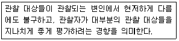
- 관용의 오류
- 근접의 오류
- 집중경향의 오류
- 엄격성의 오류
- 후광효과
(정답률: 알수없음)
43. 사후비교검정 방법이 아닌 것은?
- Spearman-Brown 검정
- Duncan 검정
- Tukey의 HSD 검정
- Scheffé 검정
- Fisher LSD 검정
(정답률: 알수없음)
44. A상담연구자는 자신이 개발한 집단상담프로그램이 우울을 감소시켜줄 것이라는 가설을 세운 후, 집단상담의 효과를 검증하기 위해 우울감 척도 점수가 가장 낮은 내담자들을 연구 대상으로 표집하였다. 이 연구에서 집단상담의 효과를 검증하기 어려운 이유는?
- 천정(ceiling) 효과
- 바닥(floor) 효과
- 호손(Hawthorne) 효과
- 존 헨리(John Henry) 효과
- 연구자 효과
(정답률: 알수없음)
45. 변량분석(ANOVA)에서 동변량성 가정을 검증하는 방법이 아닌 것은?
- Hartley의 Fmax 검증법
- Kolmogorov-Smirnov 검증법
- Cochran 검증법
- Levene 검증법
- Bartlett 검증법
(정답률: 알수없음)
46. 중학교 2학년 학생 30명을 10명씩 3집단으로 나누어 3종류의 서로 다른 집단상담프로그램을 실시하고 난 후 사회성 척도를 실시하였다. 3집단 간 사회성 점수의 차이를 검증하기 위해 변량분석(ANOVA)을 실시한 결과는 다음과 같다. A+B+C의 값은?
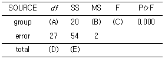
- 14
- 15
- 16
- 17
- 20
(정답률: 알수없음)
47. 모의 상담연구에 관한 설명으로 옳은 것은?
- 내적 타당도가 낮다.
- 실제 상담과 유사성이 높다.
- 윤리적인 문제가 많이 발생한다.
- 연구결과를 실제 상담에 일반화하기 쉽다.
- 연구자가 관심을 가지는 독립변인 조작이 쉽다.
(정답률: 알수없음)
48. 유사실험설계(quasi-experimental design)에서 진실험설계(true-experimental design)로 전환하기 위해 필요한 것은?
- 무선할당
- 피험자 수의 확대
- 독립변인의 수 증가
- 사전과 사후검사의 실시
- 실험집단과 통제집단의 구성
(정답률: 알수없음)
49. 우울증 환자를 대상으로 인지행동 집단상담과 정신분석 집단상담의 효과를 비교하고자 하였다. 피험자를 두 집단에 무선할당한 후, 사전검사, 집단처치, 사후검사를 각각 실시하였다. 이 연구에서 집단의 효과와 검사시기의 효과를 알아보기 위해 사용하는 연구설계는?
- 무선요인 설계(randomized factorial design)
- 혼합요인 설계(mixed factorial design)
- 무선구획 설계(randomized block design)
- 2요인 교차 설계(2-factor crossed design)
- 2요인 배속 설계(2-factor nested design)
(정답률: 알수없음)
50. 독립변인에 관한 설명으로 옳은 것을 모두 고른 것은?
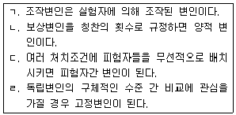
- ㄱ, ㄴ
- ㄷ, ㄹ
- ㄱ, ㄴ, ㄷ
- ㄴ, ㄷ, ㄹ
- ㄱ, ㄴ, ㄷ, ㄹ
(정답률: 알수없음)
51. 상관계수의 유의성을 해석하여 모집단에 일반화하는데 필요한 가정을 모두 고른 것은?
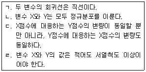
- ㄱ
- ㄴ, ㄷ
- ㄱ, ㄴ, ㄷ
- ㄴ, ㄷ, ㄹ
- ㄱ, ㄴ, ㄷ, ㄹ
(정답률: 알수없음)
52. 유사실험설계(quasi-experimental design)의 특징이 아닌 것은?
- 일반화 가능성이 높다.
- 외생변수의 통제가 어렵다.
- 독립변수의 조작화가 어렵다.
- 실제 상황에서 이루어질 수 있는 설계이다.
- 독립변수의 효과와 외생변수의 효과를 구분하기 쉽다.
(정답률: 알수없음)
53. 단일 대상 연구 설계의 특징으로 옳지 않은 것은?
- 결과 해석이 용이하다.
- 기저선이 확립된 후에 처치를 가한다.
- 독립변인의 처치수준이 고정되어 있다.
- 한 개인의 행동을 살펴볼 수 있는 강력한 방법이다.
- 처치가 끝난 후 원래의 기저선으로 돌아가는 가역성을 보여 주어야 한다.
(정답률: 알수없음)
54. 다음 절차에 따라 추정하는 타당도의 유형은?
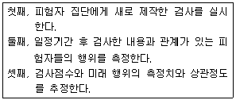
- 예측타당도(predictive validity)
- 구성타당도(construct validity)
- 안면타당도(face validity)
- 공인타당도(concurrent validity)
- 내용타당도(content validity)
(정답률: 알수없음)
55. 통계적 검증력을 높이는 방법이 아닌 것은?
- 표집의 크기를 크게 한다.
- 측정의 오차변량을 줄인다.
- 1종 오류() 수준을 높인다.
- 일방검증보다는 양방검증을 사용한다.
- 실험 절차 혹은 측정의 신뢰도를 높인다.
(정답률: 알수없음)
56. 다음 중 연구의 패러다임이 다른 것은?
- 체험분석
- 근거이론
- 이야기분석
- 시계열분석
- 담화분석
(정답률: 알수없음)
57. 다음 연구설계의 유형은?
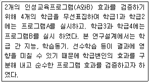
- 무선요인 설계
- 교차 설계
- 배속 설계
- 반복측정 설계
- 무선구획 설계
(정답률: 알수없음)
58. 검사의 신뢰도를 높이기 위한 설명으로 옳지 않은 것은?
- 검사대상의 개인차를 크게 한다.
- 검사내용의 범위를 포괄적으로 구성한다.
- 문항의 난이도를 적절하게 구성한다.
- 문항의 변별도를 높인다.
- 적은 수의 문항보다는 많은 수의 문항으로 구성한다.
(정답률: 알수없음)
59. 질적연구인 사례사(case history) 연구의 단점으로 옳지 않은 것은?
- 변인의 통제가 불가능하다.
- 인과적 결론을 내리기 어렵다.
- 연구자의 편견이 개입될 가능성이 있다.
- 자료가 잘못된 기억에 의존될 수 있다.
- 복잡한 행동을 집중적으로 연구하지 못한다.
(정답률: 알수없음)
60. 표본의 크기에 영향을 미치는 요인을 모두 고른 것은?
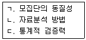
- ㄱ
- ㄴ
- ㄷ
- ㄱ, ㄴ
- ㄱ, ㄴ, ㄷ
(정답률: 알수없음)
3과목: 심리측정 평가의 활용
61. 검사타당도에 관한 설명으로 옳지 않은 것은?
- 준거타당도에는 예측타당도가 속한다.
- 구성타당도는 검사가 조작적으로 정의한 개념을 검증한다.
- 내용타당도는 전문가들이 검사내용을 살펴봄으로써 판단한다.
- 공인타당도는 주로 요인분석 방법을 사용하여 판단한다.
- 수렴변별타당도는 이론적 구성요인과의 상관관계로 판단할 수 있다.
(정답률: 알수없음)
62. 지능이론가와 그의 이론을 잘못 연결한 것은?
- 가드너(H. Gardner) - 다중지능이론
- 스턴버그(R. Sternberg) - 삼원이론
- 젠센(A. Jensen) - 3수준 지능이론
- 써스톤(L.Thurstone) - 7가지 기초정신능력
- 스피어만(C. Spearman) - 2요인 이론
(정답률: 알수없음)
63. 표준화 심리검사 결과 점수에 관한 설명으로 옳은 것은?
- 웩슬러 지능검사에서 소검사 환산점수 13은 백분위 근사값 84에 속한다.
- MMPI에서 T점수 60은 백분위 근사값 80에 속한다.
- 웩슬러 지능검사에서 지수점수 115는 백분위 근사값 80에 속한다.
- MMPI에서 T점수 40은 백분위 근사값 40에 속한다.
- 웩슬러 지능검사에서 FSIQ 70은 백분위 근사값 10에 속한다.
(정답률: 알수없음)
64. 심리검사 유형에 관한 설명으로 옳지 않은 것은?
- 객관적 검사는 구조화되어 있다.
- 비구조화 검사는 발견법칙적(nomothetic) 검사이다.
- 수검자 단위에 따라서 집단검사와 개인검사로 구분한다.
- 검사 도구에 따라 지필검사와 도구검사로 구분한다.
- 수행방식에 따른 분류는 최대 수행검사와 습관적 수행검사가 있다.
(정답률: 알수없음)
65. 척도의 유형을 수량화 가능성이 낮은 수준에서 높은 수준으로 바르게 나열한 것은?
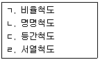
- ㄱ-ㄴ-ㄹ- ㄷ
- ㄴ-ㄷ-ㄱ- ㄹ
- ㄴ- ㄹ-ㄷ- ㄱ
- ㄷ-ㄹ-ㄴ- ㄱ
- ㄹ-ㄱ-ㄷ-ㄴ
(정답률: 알수없음)
66. 행동평가법의 목적에 관한 설명으로 옳은 것을 모두 고른 것은?
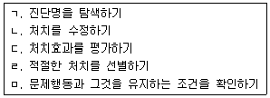
- ㄱ,ㄷ
- ㄴ,ㅁ
- ㄱ,ㄷ,ㄹ
- ㄱ,ㄴ,ㄹ,ㅁ
- ㄴ,ㄷ,ㄹ,ㅁ
(정답률: 알수없음)
67. 측정의 표준오차(SEM: standard error of measurement)에 관한 설명으로 옳지 않은 것은?
- SEM의 산출공식은 SDx(1-rxx) 이다.
- 수검자 IQ의 95% 신뢰구간은 IQ ± 1.96 × SEM이다.
- 수검자 IQ의 68% 신뢰구간은 IQ ± 1.00 × SEM이다.
- 특정 검사의 검사-재검사 신뢰도가 높을수록 SEM은 작아진다.
- SEM은 수검자의 현재 관찰점수의 신뢰구간을 설정하는 데 사용된다.
(정답률: 알수없음)
68. 검사의 신뢰도와 관련된 설명으로 옳은 것을 모두 고른 것은?
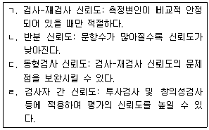
- ㄱ, ㄹ
- ㄴ, ㄷ
- ㄷ, ㄹ
- ㄱ, ㄷ, ㄹ
- ㄴ, ㄷ, ㄹ
(정답률: 알수없음)
69. 지능검사의 실시에 관한 설명으로 옳은 것을 모두 고른 것은?
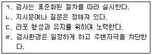
- ㄱ, ㄷ
- ㄱ, ㄹ
- ㄴ, ㄷ
- ㄴ, ㄷ, ㄹ
- ㄱ, ㄴ, ㄷ, ㄹ
(정답률: 알수없음)
70. 검사 문항의 변별력에 관한 설명으로 옳지 않은 것은?
- 문항전체 상관이 낮으면 문항의 변별력은 낮아진다.
- 문항전체 상관이 높으면 문항에서 높은 점수를 받은 사람의 전체점수도 높다.
- 변별지수는 상ㆍ하위 집단에 속한 수검자의 정답 백분율에 대한 차이값이다.
- 변별지수 D는 U/NU-L/NL이다.
- 변별지수는 0~1사이의 값을 가진다.
(정답률: 알수없음)
71. 최대수행검사에 관한 설명으로 옳은 것은?
- 평소 어떠한 행동특성을 갖고 있는 지를 평가한다.
- 인지능력이나 발달 수준을 평가하기 위한 목적이다.
- 직업선호도 검사가 이에 속한다.
- 스트롱-켐벨(Strong-Campbell) 흥미검사가 이에 속한다.
- 홀랜드(Holland) 직업유형검사가 이에 속한다.
(정답률: 알수없음)
72. 심리검사의 제작 단계를 순서대로 바르게 나열한 것은?
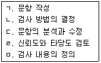
- ㄱ - ㅁ - ㄴ - ㄷ - ㄹ
- ㄱ - ㅁ - ㄴ - ㄹ - ㄷ
- ㄴ - ㅁ - ㄱ - ㄷ - ㄹ
- ㅁ - ㄴ - ㄱ - ㄷ - ㄹ
- ㅁ - ㄴ - ㄷ - ㄱ - ㄹ
(정답률: 알수없음)
73. 관찰평가에서 나타날 수 있는 오류에 관한 설명으로 옳은 것은?
- 호손(Hawthorne) 효과는 실험집단 참가자에게서 발생한다.
- 존 헨리(John Henry) 효과는 연구자의 편향에서 발생한다.
- 실험자 효과는 독립변인과 무관하게 발생한다.
- 관찰자의 기대효과는 연구목적을 잘 이해하는 보조자를 활용해서 줄인다.
- 측정하고자 하는 변인이 분명할수록 할로(halo) 효과는 증가한다.
(정답률: 알수없음)
74. 심리검사의 개발시기를 순서대로 바르게 나열한 것은?
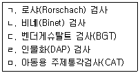
- ㄴ - ㄱ - ㄷ - ㄹ - ㅁ
- ㄴ - ㄱ - ㄹ - ㄷ - ㅁ
- ㄴ - ㄹ - ㄱ - ㅁ - ㄷ
- ㄷ - ㄴ - ㄱ - ㄹ - ㅁ
- ㄷ - ㄹ - ㅁ - ㄱ - ㄴ
(정답률: 알수없음)
75. MMPI-2의 타당도척도 중 수검자가 자신의 심리적 문제를 축소하고 긍정적인 방향으로 보이고자 할 때 상승하는 척도는?
- L, F(P), VRIN
- L, K, S
- F, F(P), F(B)
- VRIN, TRIN, FBS
- L, F, K
(정답률: 알수없음)
76. MMPI-2의 상승척도 쌍에 관한 해석으로 옳은 것은?
- 2-8: 활동 증가와 피로감이 교대로 나타나며, 사고의 혼란을 동반되지 않는다.
- 1-3: 유사 신경학적 신체 증상들에 몰두하며, 현저한 우울감과 자살사고가 동반된다.
- 4-7: 충동적인 분노 표출과 자기비난을 주기적으로 반복한다.
- 8-7: 예민하고 안절부절 못하며, 신경증적 양상만 두드러진다.
- 3-4: 분노와 적개심을 충동적으로 행동화하는 것이 주된 문제이다.
(정답률: 알수없음)
77. MMPI-2 재구성 임상척도(RC척도)의 T점수가 65점 이상 상승했을 때의 해석으로 옳지 않은 것은?
- RCd: 전반적인 정서적 불편감이 심하다.
- RC1: 신체 건강에 대한 염려와 집착이 심하다.
- RC3: 상대방에 대해 과도한 믿음을 보인다.
- RC6: 피해사고와 의심이 많다.
- RC8: 환각 및 기태적인 지각 경험이 존재한다.
(정답률: 알수없음)
78. MMPI-A에 관한 설명으로 옳지 않은 것은?
- MMPI-2와는 다르게 S척도가 없다.
- 비전형척도는 F, F1, F2로 구성되어 있다.
- MMPI 문항들 중 청소년에게 적합하지 않은 문항들을 제외하였다.
- 가정문제척도(FAM)는 청소년용에만 있는 내용척도로 가족과의 갈등을 보여준다.
- 성격병리 5요인 척도는 MMPI-2와 같이 5개로 구성되어 있다.
(정답률: 알수없음)
79. MMPI-2의 실시 및 해석에 관한 설명으로 옳은 것은?
- 검사자의 적절한 관리와 확인이 가능한 장소에서 실시하는 것이 바람직하다.
- 수검자가 문항의 뜻을 물을 경우 충분히 상의하고 상세하게 부연 설명해주는 것이 바람직하다.
- 무응답 문항이 10개 이상 20개 미만이면 타당하지 않은 자료로 간주하여 더 이상 해석하지 않는다.
- 수검자는 최소한 중학생 수준의 읽기 능력이 필요하다.
- 내용 소척도는 모척도의 T점수와 상관없이 해석할 수 있다.
(정답률: 알수없음)
80. K-WAIS-Ⅳ에 관한 설명으로 옳은 것은?
- 언어성 IQ, 동작성 IQ, 전체 IQ 산출
- 모양맞추기, 빠진곳찾기 폐기
- 총 16개의 소검사로 구성
- 일반적인 능력지표(GAI) 추가
- 동형찾기, 행렬추리 보충검사 추가
(정답률: 알수없음)
81. K-WAIS-Ⅳ 작업기억지표(WMI)의 핵심 소검사를 옳게 나열한 것은?
- 숫자, 산수
- 행렬추리, 숫자, 퍼즐
- 무게비교, 동형찾기
- 숫자, 산수, 순서화
- 동형찾기, 기호쓰기
(정답률: 알수없음)
82. 지능검사에 관한 설명으로 옳은 것은?
- 웩슬러 지능검사는 집단용으로 개발되었다.
- 웩슬러 지능검사는 편차지능지수 개념을 도입했다.
- 비율지능지수는 연령별로 지능의 상대적 위치를 보여준다.
- 스텐포드-비네검사는 최초로 정신연령 개념을 도입했다.
- 비네검사는 최초의 성인용 지능검사이다.
(정답률: 알수없음)
83. HTP검사에 관한 설명으로 옳지 않은 것은?
- 언어표현에 어려움을 겪는 사람들에게도 실시가 가능하다.
- 집을 그릴 때는 종이를 가로로 제시한다.
- 나무 그림은 무의식 수준의 자기 모습과 감정을 반영한다.
- 그림의 크기는 용지의 2/3정도가 일반적이다.
- 그림검사는 문화적 제약이 크다.
(정답률: 알수없음)
84. 로샤(Rorschach) 검사의 우울증 지표(DEPI) 항목에 해당하지 않는 것은?
- MOR ＞ 2 또는 주지화 ＞ 3
- CF+C ＞ FC
- 정서비 ＜ .46 또는 혼합반응 ＜ 4
- FV+VF+V ＞ 0 또는 FD ＞ 2
- COP ＜ 2 또는 소외지표 ＞ .24
(정답률: 알수없음)
85. 로샤(Rorschach) 검사의 실시 및 채점에 관한 설명으로 옳은 것은?
- 형태를 포함하지 않은 순수색채반응에도 조직화 활동 점수(Z점수)를 줄 수 있다.
- 질문단계에서는 이전에 하지 못했던 새로운 반응들을 충분히 이끌어낸다.
- 반응단계에서는 카드를 보고 연상되는 것에 대해 가능한 자세히 말하도록 지시한다.
- 정상 규준 집단에서 5% 미만이 반응하는 영역은 DdS로 채점한다.
- 반점의 크기나 모양에 기초하여 거리를 지각하면 FD로 채점한다.
(정답률: 알수없음)
86. 주제통각검사(TAT)에 관한 설명으로 옳지 않은 것은?
- 백지카드를 포함해서 총 31장으로 구성되어 있다.
- 수검자의 성과 연령에 따라 카드를 선정한다.
- 모든 수검자에게 적용되는 공통 카드는 총 20장이다.
- 욕구압력 분석법에서는 욕구와 환경의 압력 간 상호작용 결과를 분석한다.
- 우울한 수검자의 이야기에는 자살사고나 고립감, 무가치감 등의 주제가 자주 등장한다.
(정답률: 알수없음)
87. 투사적 검사에 관한 설명으로 옳은 것을 모두 고른 것은?
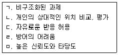
- ㄱ, ㅁ
- ㄷ, ㄹ
- ㄱ, ㄷ, ㄹ
- ㄴ, ㄷ, ㅁ
- ㄱ, ㄷ, ㄹ, ㅁ
(정답률: 알수없음)
88. 고등학교 1학년 여학생 B양의 MMPI-A T점수 결과이다. 이에 관한 해석으로 옳지 않은 것은?
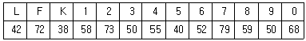
- 피해의식과 불신이 심하다.
- 부정적 기분과 우울감을 호소한다.
- 주관적 고통을 호소한다.
- 강박적 불안을 호소한다.
- 사회적인 상황에 대한 불편감을 보인다.
(정답률: 알수없음)
89. 벤더게슈탈트 검사(BGT)에 관한 설명으로 옳은 것은?
- 불안한 사람은 심한 보속성을 보인다.
- 성인에서 도형A의 정상적인 위치는 용지의 정 중앙이다.
- 뇌기능 장애가 의심될 때는 모사단계만 적용한다.
- 뇌손상이 심할 경우 모사의 정확도가 떨어진다.
- 우울증 환자는 곡선의 진폭을 크게 그린다.
(정답률: 알수없음)
90. 성격검사에 관한 설명으로 옳은 것은?
- MBTI에서 사고(T)와 감정(F)은 외부세계에 대한 태도와 관련된다.
- PAI의 임상척도에는 공격성 척도와 자살관념 척도가 포함된다.
- NEO-PI-R의 O에서 높은 점수를 보인 사람들은 목표지향적인 특성이 강하다.
- 칼 융(C. Jung)의 단어연상검사는 객관적 성격검사이다.
- PAI의 BOR 척도에서의 높은 점수는 불안정한 대인관계를 시사한다.
(정답률: 알수없음)
4과목: 이상심리
91. 사고장애의 증상으로 옳은 것을 모두 고른 것은?
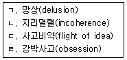
- ㄱ, ㄴ
- ㄴ, ㄹ
- ㄷ, ㄹ
- ㄱ, ㄴ, ㄷ
- ㄱ, ㄴ, ㄷ, ㄹ
(정답률: 알수없음)
92. 성도착 장애(paraphilic disorders)에 관한 설명으로 옳은 것은?
- 아동성애 장애(pedophilic disorder)는 성인이 되는 18세부터 진단할 수 있다.
- 의상전환 장애(transvestic disorder)는 물품음란증이 동반되지 않는다.
- 반사회성 성격장애는 노출장애(exhibitionistic disorder)의 위험요인에 해당된다.
- 물품음란 장애(fetishistic disorder)에서 특정 신체 부위에 대한 집착은 포함되지 않는다.
- 관음장애(voyeuristic disorder)는 성적 호기심이 많은 16세부터 진단할 수 있다.
(정답률: 알수없음)
93. 강박 및 관련 장애에 관한 설명으로 옳지 않은 것은?
- 피부벗기기 장애: 반복적인 피부벗기기로 인해 피부 손상이 초래된다.
- 강박장애: 숫자 세기는 강박사고에 포함된다.
- 저장장애(수집광): 수집하는 물건은 실제 가치와 상관 없다.
- 발모광: 머리털을 뽑는 것을 그만두기 위해 반복적인 시도를 한다.
- 신체변형장애: 신체적 외모의 결함이 있다고 생각하고 지나치게 집착한다.
(정답률: 알수없음)
94. 신체증상 및 관련 장애에 관한 설명으로 옳은 것을 모두 고른 것은?
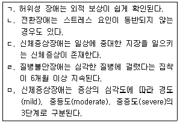
- ㄱ, ㄴ
- ㄴ, ㄹ
- ㄱ, ㄴ, ㄷ
- ㄷ, ㄹ, ㅁ
- ㄴ, ㄷ, ㄹ, ㅁ
(정답률: 알수없음)
95. 신경발달장애에 해당되지 않는 것은?
- 이식증
- 틱장애
- 아동기 발생 유창성 장애(말더듬)
- 상동증적 운동장애
- 발달성 운동협응장애
(정답률: 알수없음)
96. DSM-5에서 조현병(정신분열병)의 진단기준에 포함된 증상으로 옳지 않은 것은?
- 사고의 장애
- 지각의 장애
- 기억의 장애
- 행동의 장애
- 언어의 장애
(정답률: 알수없음)
97. 단기 정신병적 장애에 관한 설명으로 옳은 것은?
- 음성 증상이 나타난다.
- 삽화 이후 병전 수준의 기능으로 회복된다.
- 지속 기간은 1일 이상 1주일 이내이다.
- 긴장성 행동은 나타나지 않는다.
- 기존의 성격 문제가 장애 발생의 취약성을 높이지 않는다.
(정답률: 알수없음)
98. 다음 진단기준에 해당하는 성격장애를 순서대로 바르게 나열한 것은?
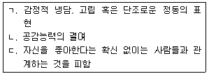
- ㄱ: 분열형, ㄴ: 자기애성, ㄷ: 회피성 성격장애
- ㄱ: 분열성, ㄴ: 반사회성, ㄷ: 편집성 성격장애
- ㄱ: 강박성, ㄴ: 자기애성, ㄷ: 회피성 성격장애
- ㄱ: 분열형, ㄴ: 반사회성, ㄷ: 편집성 성격장애
- ㄱ: 분열성, ㄴ: 자기애성, ㄷ: 회피성 성격장애
(정답률: 알수없음)
99. 주의력 결핍 및 과잉행동장애(ADHD)에 관한 설명으로 옳지 않은 것은?
- 학령전기에 보이는 주요 증상은 과잉행동이다.
- 앉아 있도록 요구되는 상황에서 자리를 떠나는 것은 부주의 증상에 해당된다.
- 증상이 지속되면 적대적 반항장애로 발전될 가능성이 높다.
- 증상이 일상적 기능을 방해하지 않으면 장애로 진단될 수 없다.
- 여성보다 남성에게 더 흔하게 나타난다.
(정답률: 알수없음)
100. 특정 학습장애에 관한 설명으로 옳은 것은?
- 특정 학습장애의 심각한 정도는 구분하지 않는다.
- 17세 이상인 경우 과거 병력이 표준화된 평가를 대신할 수 없다.
- 읽기 손상 동반의 경우 읽은 내용에 대한 기억력이 포함된다.
- 쓰기 손상 동반의 경우 작문의 명료도와 구조화가 포함된다.
- 수학 손상 동반의 경우 수학적 추론의 정확도는 포함되지 않는다.
(정답률: 알수없음)
101. 주요 신경인지장애에 관한 설명으로 옳은 것은?
- 인지 기능의 저하 여부는 병전 수행 수준을 기준으로 삼지 않는다.
- 가족력이나 유전자 검사에서 원인이 되는 유전적 돌연변이의 증거가 있어야 한다.
- 기억 기능의 저하가 항상 나타난다.
- 인지 기능 손상의 증거가 환자나 보호자의 주관적 보고 또는 객관적 검사 중 하나에서 확인되면 진단 가능하다.
- 알츠하이머병으로 인한 경우는 서서히 시작되고 점진적으로 진행된다.
(정답률: 알수없음)
102. 성격장애의 일반적 진단기준에 포함되지 않는 것은?
- 인지
- 태도
- 정동
- 충동조절
- 대인관계 기능
(정답률: 알수없음)
103. 파괴적, 충동조절 및 품행장애에 관한 설명으로 옳은 것을 모두 고른 것은?
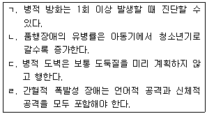
- ㄱ
- ㄱ, ㄹ
- ㄱ, ㄴ, ㄷ
- ㄴ, ㄷ, ㄹ
- ㄱ, ㄴ, ㄷ, ㄹ
(정답률: 알수없음)
104. 의사소통장애에 관한 설명으로 옳은 것은?
- 언어장애는 증상이 1년 이상 지속되어야 한다.
- 사회적 의사소통 장애와 자폐 스펙트럼 장애는 동시에 진단될 수 있다.
- 언어장애는 수용성 결핍에 비해 표현성 결핍이 있을 때 예후가 더 나쁘다.
- 아동기 발생 유창성 장애(말더듬)의 필수 증상은 연령보다 미진한 말의 속도와 유창성이다.
- 발화음 장애(말소리 장애)는 아동의 연령과 발달 단계가 고려되지 않는다.
(정답률: 알수없음)
1⑤. 물질 관련 장애에 포함되지 않는 것은?(오류 신고가 접수된 문제입니다. 반드시 정답과 해설을 확인하시기 바랍니다.)
- 알코올 중독(intoxication)
- 카페인 금단(withdrawal)
- 담배(타바코) 중독(intoxication)
- 대마계(칸나비스) 사용장애(use disorder)
- 아편계 금단(withdrawal)
(정답률: 알수없음)
106. 정신장애의 유형 중 DSM-5에 새롭게 추가된 진단명이 아닌 것은?
- 저장장애
- 카페인 사용장애
- 피부 벗기기 장애
- 월경전 불쾌장애
- 초조성 다리증후군
(정답률: 알수없음)
107. 이상행동 또는 정신장애와 연관된 용어에 관한 설명으로 옳지 않은 것은?
- 역학(epidemiology): 특정한 이상행동과 정신장애의 분포 양상에 관한 연구
- 위험요인(risk factor): 이상행동이나 정신장애의 발생 가능성을 증가시키는 어떤 조건이나 환경
- 증상(symptom): 객관적으로 관찰 가능한 질병이나 정신장애의 이상 징후와 징표에만 해당
- 장애(disorder): 신체기관이 본래의 제 기능을 발휘하지 못하거나 정신능력에 어떤 결함이 있는 상태
- 유병률(prevalence): 전체인구 중 특정한 정신장애(예: 우울증, 불면증)를 가진 사람들의 비율
(정답률: 알수없음)
108. 다음에 제시된 4개의 증상 모두를 포함하는 진단명은?
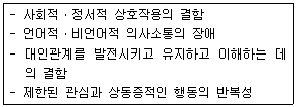
- 반응성 애착장애
- 탈억제 사회관여 장애
- 상동증적 운동장애
- 자폐 스펙트럼 장애
- 사회적 의사소통 장애
(정답률: 알수없음)
109. 다음 증상에 적절한 진단명은?
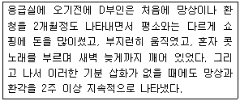
- 정신분열형 장애
- 분열형 성격장애
- 분열성 성격장애
- 분열정동장애
- 조현병(정신분열병)
(정답률: 알수없음)
110. 다음 증상에 적절한 진단명은?
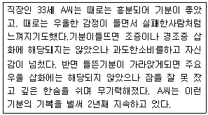
- 지속성 우울장애
- 제Ⅰ형 양극성 장애
- 제Ⅱ형 양극성 장애
- 순환성 장애
- 기분조절곤란 장애
(정답률: 알수없음)
111. 주요 우울장애에 동반되는 세부 유형(양상)에 해당되지 않는 것은?
- 급속 순환성 양상 동반
- 혼재성 양상 동반
- 주산기 발병 양상 동반
- 계절성 양상 동반
- 긴장증 양상 동반
(정답률: 알수없음)
112. 일명 다코스타 증후군(DaCosta's syndrome), 군인심장증후군(solder's heart syndrome), 또는 로작증후군(Rojak syndrome)과 관련이 있는 장애는?
- 공황장애
- 허위성 장애
- 호흡 관련 수면장애
- 질병불안장애
- 신체증상장애
(정답률: 알수없음)
113. 다음 증상을 나타내는 정신장애에 관한 설명으로 옳지 않은 것은?
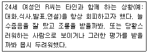
- 생활 전반에 걸쳐 만성적인 불안과 과도한 걱정을 나타내며 매사에 잔걱정이 많다.
- 두려운 사회적 상황을 회피하거나 또는 강한 공포와 불안을 지닌 채 견디어 낸다.
- 공포, 불안, 또는 회피증상이 6개월 이상 나타날 경우 진단을 내린다.
- 다른 사람들에게 자신의 불안증상을 나타내게 될까봐 두려워한다.
- 공포가 대중 앞에서 말하거나 수행하는 것에 국한되는 경우 수행형 단독이라고 한다.
(정답률: 알수없음)
114. 급성 스트레스 장애의 진단기준에 해당되지 않는 것은?
- 부정적 기분
- 해리증상
- 저항증상
- 회피증상
- 각성증상
(정답률: 알수없음)
115. 해리장애에 관한 설명으로 옳지 않은 것은?
- 해리장애는 견디기 힘든 외상적 경험이나 심리적 쇼크 또는 어떤 뇌손상이나 신체적 질병에 의해 초래되는 경우가 많다.
- 해리는 의식의 통합적 기능이 통일성을 상실한 나머지 연속적인 자아로부터 의식이 단절되는 현상을 뜻한다.
- 해리장애는 자신이 매우 낯설게 느껴지는 이인증, 외부 세계가 달라졌다고 느껴지는 비현실감을 경험하기도 한다.
- 장기간 심하게 강압적으로 설득이나 고문을 당했던 사람에게 해리증상이 나타날 수 있다.
- 해리성 기억상실증은 중요한 자서전적 정보를 회상하지 못하는 것으로, 해리성 둔주가 나타날 수 있다.
(정답률: 알수없음)
116. 대인관계의 자아상 및 정동의 불안정성, 심한 충동성을 보이는 광범위한 행동 양상으로 인해 사회적 부적응이 초래되는 성격장애는?
- 의존성 성격장애
- 경계선 성격장애
- 자기애성 성격장애
- 편집성 성격장애
- 연극성 성격장애
(정답률: 알수없음)
117. 18세 청소년S양은 최근 몇개월동안 학교생활에서 지나친 졸음 때문에 어려움을 겪었다. 수업시간에 과제를 발표하던 중 갑자기 정신이 멍해지고 온 몸에 힘이 빠지면서 잠에 빠져든 적도 여러 번 있었다. S양은 자신도 모르게 어쩔 수 없이 갑자기 잠에 빠졌다고 했고, 담임선생님은 그 말을 믿지 않았다. 이 장애와 관련된 증상에 해당하는 것을 모두 고른 것은?
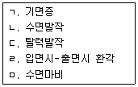
- ㄱ, ㄴ
- ㄱ, ㄷ, ㄹ
- ㄴ, ㄷ, ㅁ
- ㄴ, ㄷ, ㄹ, ㅁ
- ㄱ, ㄴ, ㄷ, ㄹ, ㅁ
(정답률: 알수없음)
118. 환각제에 해당되지 않는 물질은?
- 벤조디아제핀(benzodiazepin)
- 펜사이클리딘(phencyclidine)
- 엘에스디(LSD)
- 메스칼린(mescaline)
- 엑스터시(ecstasy)
(정답률: 알수없음)
119. 다음 증상을 보이는 정신장애의 원인에 관한 가설로 옳지 않은 것은?
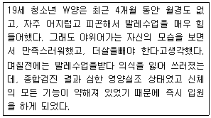
- 자가중독이론
- 신체상의 왜곡된 인지적 특성
- 시상하부의 기능이상으로 인한 설정점(set point)의 저하
- 성적인 욕구에 대한 방어적 행동
- 굶는 동안 엔도르핀의 수준 저하로 인한 기분 상승
(정답률: 알수없음)
120. DSM-5는 부가적으로 '임상적 주의가 필요한 기타 문제'에서 한 개인이 처한 '사회환경과 연관된 문제'들을 다루고 있는데, 이 범주에 해당하는 것을 모두 고른 것은?(오류 신고가 접수된 문제입니다. 반드시 정답과 해설을 확인하시기 바랍니다.)
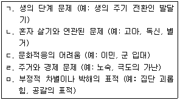
- ㄱ, ㄴ
- ㄱ, ㅁ
- ㄴ, ㄷ, ㄹ
- ㄱ, ㄴ, ㄷ, ㅁ
- ㄴ, ㄷ, ㄹ, ㅁ
(정답률: 알수없음)